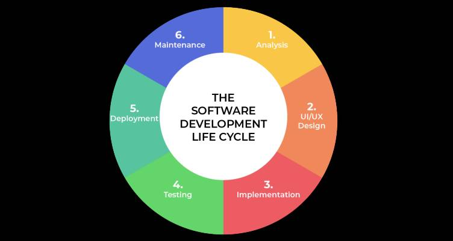
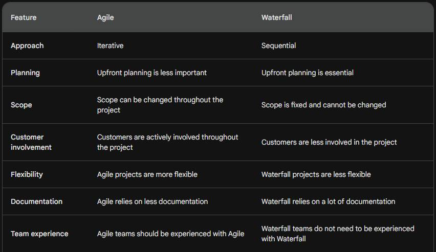

Categories
Copyright, Attribution and Licenses

Privacy Policy

Scrum versus Waterfall Metodologies
13/11/2023
Agile vs. Waterfall: Which Methodology is Right for Your Project

Agile and Waterfall are two popular project management methodologies. Agile is an iterative approach that emphasizes flexibility and adaptability, while Waterfall is a sequential approach that requires careful planning and execution.
What is Agile?
Agile is a methodology that emphasizes flexibility and adaptability. It is based on the idea that projects are too complex to be planned in detail at the outset and that requirements are likely to change as the project progresses. As a result, Agile projects are divided into small increments, or sprints, which are typically two to four weeks long.
During each sprint, the team works on a small set of requirements. They meet regularly to plan, develop, and test the work. At the end of each sprint, the team delivers a working product increment to the customer.
Agile projects are characterized by the following values and principles:
- Customer involvement: Customers are actively involved in the development process and provide feedback throughout the project.
- Embrace change: Agile teams are willing to adapt their plans as requirements change.
- Focus on working software: Agile teams deliver working software incrementally, rather than waiting until the end of the project to deliver a complete product.
- Empowerment: Agile teams are self-organizing and empowered to make decisions about how they work.
- Collaboration: Agile teams work together to achieve common goals.
- Regular feedback: Agile teams gather feedback from customers and stakeholders throughout the project.
What is Waterfall?

Waterfall is a sequential approach to project management. It is based on the idea that projects should be planned in detail at the outset and that requirements should be frozen before development begins. As a result, Waterfall projects are divided into a series of phases, which are typically completed in a linear fashion.
The phases of a Waterfall project are typically as follows:
- Requirements: During the requirements phase, the team gathers and analyzes requirements from the customer.
- Design: During the design phase, the team creates a detailed plan for the project.
- Development: During the development phase, the team builds the product.
- Testing: During the testing phase, the team tests the product to ensure that it meets the requirements.
- Deployment: During the deployment phase, the team deploys the product to the customer.
Waterfall projects are characterized by the following:
- Upfront planning: Waterfall projects require careful upfront planning.
- Fixed scope: The scope of a Waterfall project is typically fixed and cannot be changed once the project has begun.
- Documentation-driven: Waterfall projects rely on a lot of documentation.
- Less flexibility: Waterfall projects are less flexible than Agile projects.
- Less customer involvement: Customers are typically less involved in the development process in Waterfall projects.
Which methodology is right for your project?
The best methodology for your project will depend on a number of factors, including the size and complexity of the project, the level of customer involvement required, and the team's experience with the methodology.
In general, Agile is a good choice for projects that are:
- Small to medium in size.
- Complex or uncertain.
- Require a high degree of customer involvement.
- The team is experienced with Agile.
Waterfall is a good choice for projects that are:
- Large and well-defined.
- Relatively stable.
- Do not require a high degree of customer involvement.
- The team is not experienced with Agile.
Here is a table that summarizes the key differences between Agile and Waterfall:

Conclusion
Agile and Waterfall are both popular project management methodologies. The best methodology for your project will depend on a number of factors. If you are not sure which methodology to choose, you can always consult with a project management expert.
Sources:
https://www.linkedin.com/pulse/software-development-life-cycle-sdlc-tutorial-richard-harris/
Similar Pages
-
New Version is Released! v1.0.0
-

A Nightmares Chain in Code: Working in Systems That Cannot Be Debuggable or Testable
Everywhere is 3rd party framework and do you really manage all of them very well? -

Beware of Fake Problem Solver Applications
-
Abandoned Software
Everybody creating software projects, but how about discontinued ones? -

Software Delivery
Ready to Go Software Products; It's time to meets his users -

Keep It Simple, Stupid
Embracing Simplicity in Software Development -

Software Yang Principle
Embracing Change and Innovation in Software Development -

Kubernetes vs Docker
What they are? Which one is better?